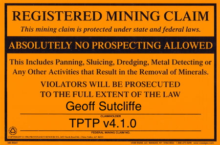

We Claim ...

Comparable Proofs
- Must be syntactically well-formed
- "Verifiable in polynomial time"
- Must have comparable proof artifacts
- Proof language (to make life easy)
- Proof process (producing the same artifacts)
- Require equivalence oracles for proof artifacts
Different Proofs
- Ranking not really possible in ATP
- Quality is "difference from other proofs"
- Proof-set quality is lack of clustering